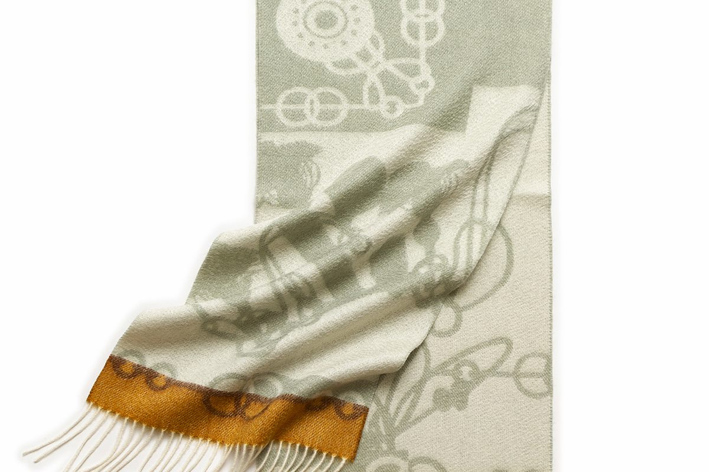

Careful selection
Cashmere is a fibre that shows every decision made with it. We choose the fibre and colour combinations with the seasons and climate that our customers live in in mind.
About us
Bovo is the brand of 内蒙古魏帛绒毛制品有限公司, Inner Mongolia Weibo Wool Products Co., Ltd. The company makes cashmere scarves, cashmere accessories and silk quilts, and sells mainly through online channels, including Amazon Japan.

Our company
We have worked in cashmere products for more than ten years, producing and selling scarves and related accessories. That experience is what we bring to every piece: the choice of fibre, the way a scarf drapes, how it wears through a winter, and how it should be cared for.
Our line has grown to include cashmere accessories such as triangle scarves and knitted patterns. Alongside cashmere, we also produce and sell silk quilts.
We are a small team, and we prefer to tell you what our products are rather than what they are not. If you need a detail we have not listed, please ask us directly.
At a glance
How we work
Cashmere is a fibre that shows every decision made with it. We choose the fibre and colour combinations with the seasons and climate that our customers live in in mind.
Softness, drape and the weight of a scarf are what make it easy or difficult to wear. We test new designs and patterns on our own shelves before adding them to our range.
We describe our products as they are: the fibre, the design, and how to care for them. Details are listed on each product page, and anything unclear can be asked by email.
Email nmgwbyp2023@163.com. We reply in English or Chinese.